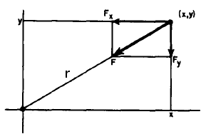

Równania ruchu
Na ciało znajdujące się w pewnej odległości $r$ od środka ciała niebieskiego (planety) działa siła grawitacji $F$ skierowana wzdłuż linii
łączącej oba ciała. Dobrze ilustruje to poniższy rysunek:

Z rysunku możemy zauważyć, że:
$\frac{F_x}{|F|} = -\frac{x}{r}$
$F_x = -|F|\frac{x}{r} = -\frac{GMmx}{r^3}$
podobnie wyznaczamy składową $F_y$. Korzystając z równania Newtona łatwo znajdujemy równania ruchu
$m\ddot{x} = -\frac{GMmx}{r^3}$ oraz $m\ddot{y} = -\frac{GMmy}{r^3}$, ostatecznie:
$\ddot{x} = -\frac{GMx}{r^3}$
$\ddot{y} = -\frac{GMy}{r^3}$
$r = \sqrt{x^2 + y^2}$
Pierwsza prędkość kosmiczna
Jest to minimalna prędkość pozioma jaką należy nadać ciału względem przyciągającego go ciała niebieskiego aby ciało to poruszało się po zamkniętej
orbicie kołowej. Aby wyprowadzić tą zależność należy zauważyć, że na orbicie kołowej siła dośrodkowa i siła grawitacyjna wzajemnie się
równoważą:
$\frac{mv_I^2}{r} = \frac{GMm}{r^2}$
$v_I = \sqrt{\frac{GM}{r}} = \sqrt{\frac{GM}{R + h}}$
gdzie $r$ - odległość ciała od środka planety, $R$ - promień planety, $h$ - wysokość nad powierzchnią planety.
Przykład
Wyrzucamy ciało pod kątem $\alpha = 0$ na wysokości $h = 1000 km$ nad Ziemią. Jaką należy mu nadać prędkość aby poruszało się po orbicie kołowej o
promieniu $r = R + 1000 km$. Zakładamy, że promień Ziemi to $R = 6371 km$, natomiast iloczyn $GM = 398600.4419 km^3/s^{-2}$.
$v = \sqrt{\frac{GM}{R + h}} = \sqrt{\frac{398600.4419}{6371 + 1000}} \approx 7.3537 km/s$
Druga prędkość kosmiczna
Jest to prędkość, jaką należy nadać obiektowi, aby opuścił na zawsze dane ciało niebieskie poruszając się dalej ruchem swobodnym,
czyli jest to prędkość, jaką trzeba nadać obiektowi na powierzchni tego ciała niebieskiego, aby tor jego ruchu stał się parabolą lub
hiperbolą.
Wyprowadzenie polega na porównaniu energii obiektu znajdującego się na powierzchni oraz w nieskończoności. Energia w nieskończoności
równa jest 0 (zarówno kinetyczna, jak i potencjalna pola grawitacyjnego), zatem na powierzchni sumaryczna energia
też musi się równać 0:
$E = -\frac{Gmm}{R} + \frac{mv_{II}^2}{2} = 0$
$v_{II} = \sqrt{\frac{2GM}{R}}$
gdzie $R$ - promień planety. W przypadku Ziemi wynosi ona około $11.19 km/s$.